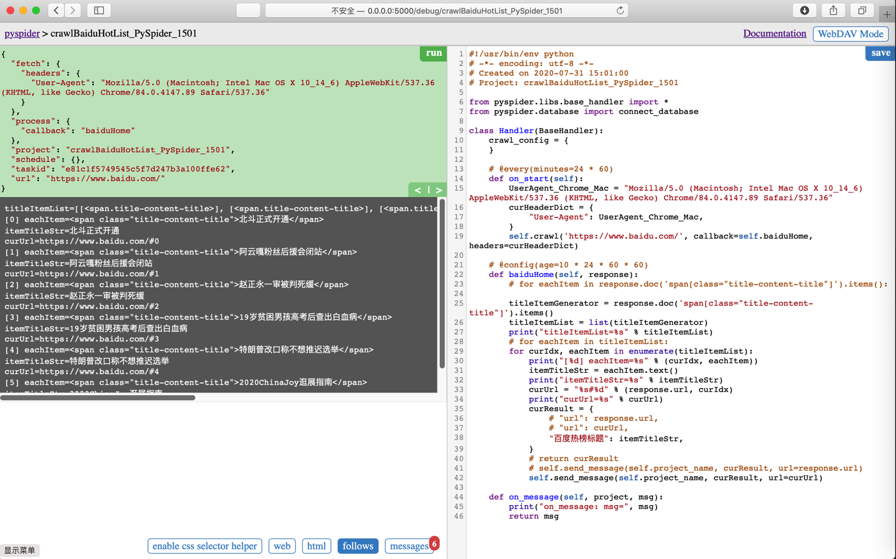
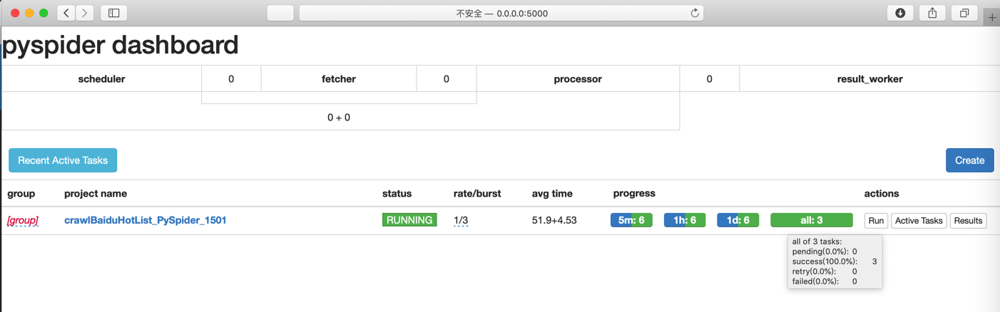
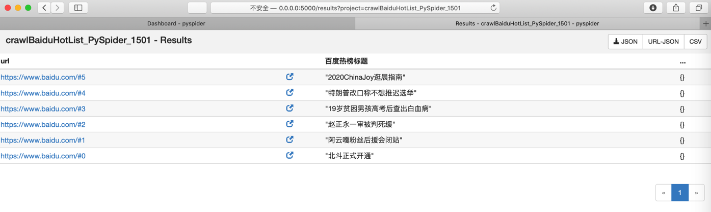
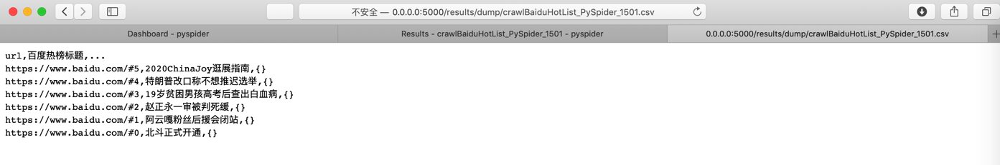

用爬虫框架
此处再去把同样爬虫功能，换成第三方的爬虫框架PySpider去实现。
- 准备工作
- 安装：
pip install pyspider - 启动：
pyspider
- 安装：
经过调试，效果是：
调试时能看到输出多个message的结果：

去Run运行项目：

运行完毕后，点击Results，进入结果页面：

点击CSV显示（也可以保存下载）结果：

下载或拷贝出来，放到VSCode中，预览效果为：

即可实现最终要的结果。
完整代码
#!/usr/bin/env python
# -*- encoding: utf-8 -*-
# Created on 2020-07-31 15:01:00
# Project: crawlBaiduHotList_PySpider_1501
from pyspider.libs.base_handler import *
from pyspider.database import connect_database
class Handler(BaseHandler):
crawl_config = {
}
# @every(minutes=24 * 60)
def on_start(self):
UserAgent_Chrome_Mac = "Mozilla/5.0 (Macintosh; Intel Mac OS X 10_14_6) AppleWebKit/537.36 (KHTML, like Gecko) Chrome/84.0.4147.89 Safari/537.36"
curHeaderDict = {
"User-Agent": UserAgent_Chrome_Mac,
}
self.crawl('https://www.baidu.com/', callback=self.baiduHome, headers=curHeaderDict)
# @config(age=10 * 24 * 60 * 60)
def baiduHome(self, response):
# for eachItem in response.doc('span[class="title-content-title"]').items():
titleItemGenerator = response.doc('span[class="title-content-title"]').items()
titleItemList = list(titleItemGenerator)
print("titleItemList=%s" % titleItemList)
# for eachItem in titleItemList:
for curIdx, eachItem in enumerate(titleItemList):
print("[%d] eachItem=%s" % (curIdx, eachItem))
itemTitleStr = eachItem.text()
print("itemTitleStr=%s" % itemTitleStr)
curUrl = "%s#%d" % (response.url, curIdx)
print("curUrl=%s" % curUrl)
curResult = {
# "url": response.url,
# "url": curUrl,
"百度热榜标题": itemTitleStr,
}
# return curResult
# self.send_message(self.project_name, curResult, url=response.url)
self.send_message(self.project_name, curResult, url=curUrl)
def on_message(self, project, msg):
print("on_message: msg=", msg)
return msg